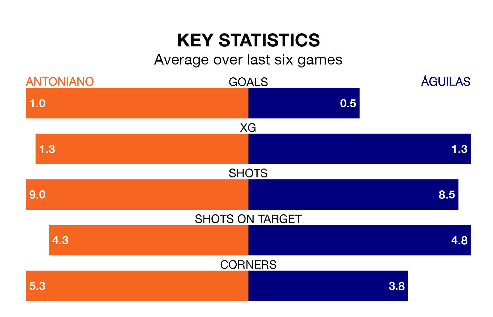

Águilas travel to Antoniano on Sunday in the Segunda División RFEF Group 4.
The visitors come into the game on the back of a draw in their last match, having tied with Cartagena B 1-1 at home, with a goal from Francisco Jesús Ferrón Ruiz.
Antoniano, meanwhile, lost their last match, 2-0 against Yeclano Deportivo.
Antoniano are in mixed form in the Segunda División RFEF Group 4, with two wins and a draw from their last six games.
With a win and three draws over that period, Águilas's form is slightly worse – they have taken six points from 18, compared to the home side's seven.
With 21 goals in 29 games so far this season, the visitors are the league's joint-third-lowest scorers with 0.7 goals per game. But they are conceding fewer than average too, letting in 15 goals at a rate of 0.5 per game.
Antoniano are also below average scorers, with 0.8 goals per game, compared to a league average of 1.0. They have conceded 1.2 goals per game.
Antoniano are 12th in the table after 29 games, of which they have won nine and drawn eight, earning 35 points.
Águilas are five places ahead of the hosts in seventh, with 10 wins and 12 draws putting them on 42 points.
Updated: 16:41 (UTC), 04/04/24